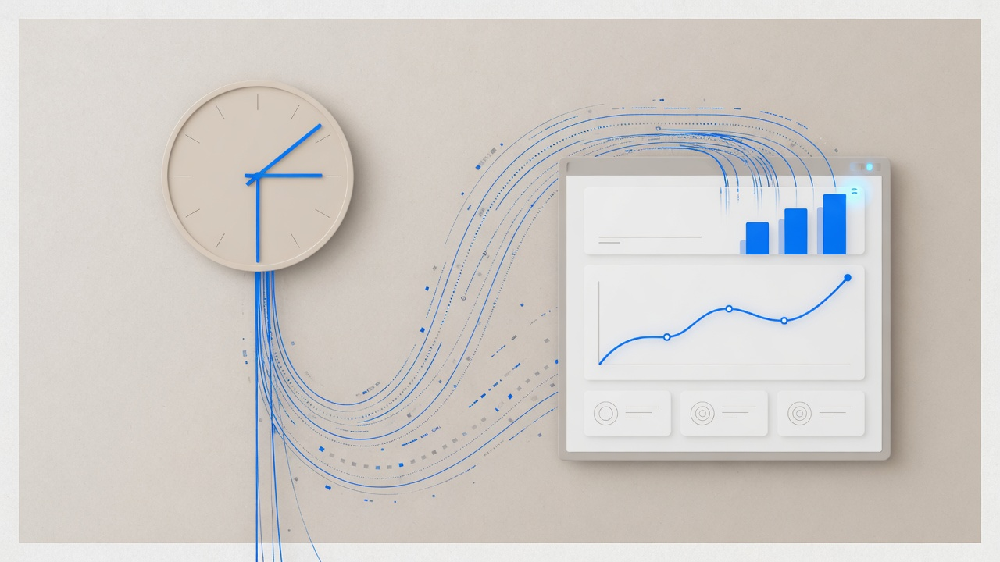

“Near-real-time” is often used as a synonym for “we bought a streaming stack.” On GTM data platforms, that confusion is expensive. The product promise is about whether a decision-maker can trust a number in time — not whether an event log is busy. At LinkedIn, the Enterprise Data Platform (EDP) was intended as the governed center for GTM datasets. BI teams on Power BI and Tableau still ran on Hadoop-era batch paths. They already had data. What they did not have was a reason to treat EDP as the path that made GTM analytics true, timely, and durable as legacy pipelines were marked for deprecation. That gap is a product-promise gap.

What consumers actually bought
When sales, marketing, or BI stakeholders ask for better data timing, they rarely mean “please introduce a new consumer group.” They mean things like:
- The dashboard does not contradict the operational truth for long.
- A GTM metric used in a weekly motion is not secretly a stale extract.
- There is one place to stand when two numbers disagree.
Those are promises to named consumers. For us, the critical early consumers included BI engineering and the GTM partners who lived in their dashboards. If those consumers do not move, the platform’s internal latency graphs are cosplay.
A definition that forces honesty
I use a boring definition: for dataset D and consumer C, the promise is that the age of usable data at the moment C acts stays inside an agreed bound — under normal conditions — with a clear story when it does not. Unpack it in platform language:
- Named dataset — a sales or GTM entity teams recognize, not “the lake.”
- Named consumer — Power BI workbook owners, Tableau extracts, revenue analytics — not “downstream.”
- Usable — passes the governance and correctness bar, not merely “row arrived.”
- Agreed bound — may start as a milestone (“on EDP before deprecation date, with acceptable query latency”) before it becomes a polished SLO.
- Failure story — what the business does when the path is wrong: freeze a pipeline, pin a version, staff a war room — not “we’ll check the dashboard Monday.”
If you cannot name D and C, you are not ready to sell near-real-time.
Why “we can already get the data” kills platform promises
The BI objection was rational: existing Hadoop-based jobs still produced outputs. From their seat, migration was risk without immediate upside. So the competing product was not another vendor. It was the legacy batch path that still worked. Near-real-time platforms lose to “good enough yesterday” until:
- the old path has an end date,
- the new path is staffed for adopters,
- query performance after cutover is somebody’s on-call problem.
We treated those as part of the promise design. EDP engineers helped migrate. Connectors reduced friction into Power BI and Tableau. Deprecation deadlines made dual-running finite. Performance work made “governed” not mean “slower.” Streaming could have been part of some paths. It was not the adoption strategy.
Hidden decisions that are actually the product
Where is the system of record?
If EDP and a legacy pipeline disagree, which number is allowed to win in a QBR deck? Until that is explicit, faster pipelines just produce faster arguments.
Is the promise contractual or best-effort?
Deprecating Hadoop paths is a contractual move: the company is choosing a continuity posture. Best-effort “please try EDP” will lose to local convenience forever.
Who pays for fan-out?
Every BI team and every GTM dataset multiplies support surface. Platforms that treat every new consumer as free eventually stop being able to keep any promise.
What happens during catch-up and cutover?
Migrations create windows where two truths coexist. The product promise must cover the dual-run period — or you will invent tribal knowledge in Slack.
The shape that worked: phases, not a big-bang bus
The useful architecture picture was organizational as much as technical:
- Executive buy-in — GTM data consolidation as strategy, not a side project.
- MVP on high-value sales datasets — prove the promise where pain is visible.
- Expand across sales and revenue consumers — widen the interface only after the path works.
- Broader GTM standardization — reduce snowflake pipelines.
- Governance and optimization — make the default path the boring path.
That sequence is how you keep a freshness/correctness promise while the org is still learning to trust the platform. “Put everything on a stream in quarter one” is usually a way to buy complexity before you have consumers.
Questions I ask before approving “let’s go real-time”
- Which decision improves if this dataset gets younger — and who makes that decision?
- What is the current path’s delay, really (including BI extracts and cache TTLs)?
- What dies when we succeed — the legacy job, or only our spare time?
- Who is staffed to migrate the first consumers?
- What query latency is acceptable in the tools people actually use?
- What do we measure weekly that a VP would recognize?
If the answers are all technology choices, the promise is not ready.
Closing
Near-real-time is not a badge for an architecture review. It is a promise about time, truth, and behavior when truth is late. EDP’s lesson was blunt: the company does not get that promise when a platform exists. It gets that promise when critical consumers — here, BI on GTM data — run on the governed path, and the old batch defaults are allowed to end. Build streams when they earn their keep. Build the consumer promise first.
Comments
Sign in with GitHub to join the discussion.